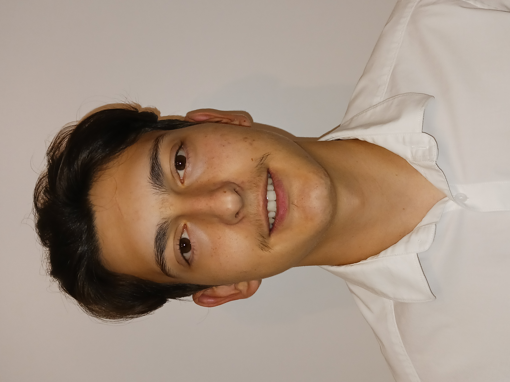

Nous somme 4 étudiants en BUT 1 Réseaux et Télécommunications.
Nous allons vous présenter dans ce site web le projet nommé : Localiser une source sonore dans un environnement intérieur.
Ce projet a été effectué lors de la SAE 24 à l'IUT de Blagnac.
Simon CATHALA - Etudiant en BUT RT
Maxime CALMELS - Etudiant en BUT RT
Clément BARREDA - Etudiant en BUT RT
GASPAROTTO Sylvio - Etudiant en BUT RT
NSIMA Ernest - Etudiant en BUT RT
La Situation d’Apprentissage et d’Évaluation ou simplement SAé est la situation didactique, qui se définit comme un ensemble constitué d’une ou plusieurs tâches à réaliser par l’étudiant en vue d’atteindre le but fixé.
● à l’étudiant, de développer et d’exercer une ou plusieurs compétences disciplinaires et transversales;
● à l’enseignant, d’assurer le suivi du développement des compétences dans une perspective d’aide à l’apprentissage
Nous nous sommes consacrés à un projet impliquant la mise en place d'un système de surveillance sonore basé sur des Raspberry Pi.
Pour mener à bien ce projet, une série de choix techniques importants ont été nécessaires, touchant à la structure du système, la transmission et la gestion des données, les outils de développement, et l'environnement de développement.
Chaque décision a été prise en considération de l'efficacité et de l'adaptabilité de notre système.
– Compréhension d’une architecture complète (réseaux, télécommunications, système et service)
● Analyse de l’ensemble des briques
● Intervention sur les composants
● Interaction entre les composants
● Proposition de pistes d’amélioration
- Exploiter un signal sonore (sinusoïdal) émis par un objet et reçu par trois microphones.
– Estimer la position en (x,y) de l’objet dans une pièce.
– Présenter l’estimation de la position sur une interface dédiée (site web).
Calculer distance de chaque case pour chaque microphone (code + stockage)
Cartographier pour chaque microphone amplitude signal (amplitude pour chaque case de la pièce) (code)
Déterminer nombre de bits nécessaire pour plage valeur amplitude
Installer et Configurer broker, serveur web, base de données
Simuler arrivée de trois amplitudes sur récepteur → coder estimation de la position de l’objet
Simuler déplacement objet sur plusieurs cases → coder estimation du déplacement de l’objet
Concevoir une interface pour affichage du résultat
Concevoir un site web pour présentation du projet